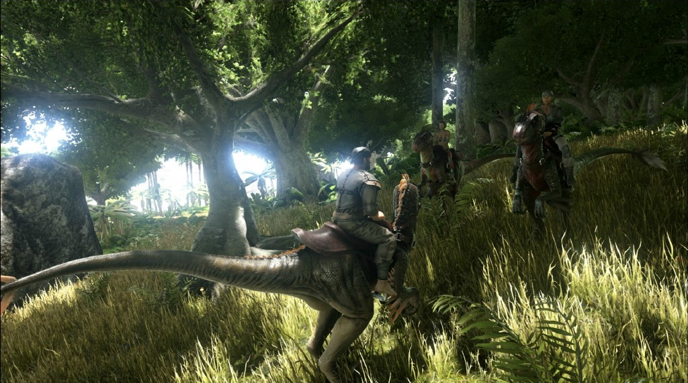
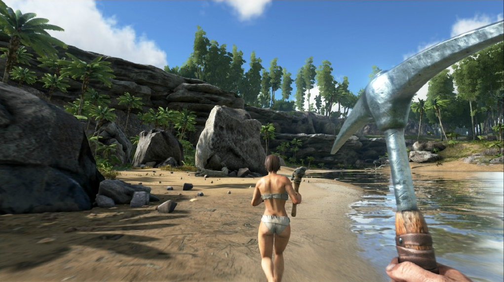

世界观
游戏中游戏的故事背景设定在一群男女从在岸边醒来后，发现自己身处一个充满恐龙的神秘岛屿“ARK”。游戏中除了狩猎、资源搜刮、物品打造、种植、科研、调查技术和建造房子来抵抗炎热的白天，冰冷的夜晚，易变的天气系统，危险的野外和潜在的敌人等之外，玩家还必须面对其他玩家所扮演的幸存者，合作或者是相互厮杀。并且有数十种恐龙和其他史前生物，玩家们可以驯服这些庞大的生物，并利用它们来和更强的敌人战斗。当然恐龙并非岛上唯一的危险生物，其他的玩家也正在组织自己的部落，积累各种资源和经验来建立庞大的村庄和城市，他们还能不断发展技术来跨越原始的石器时代并进入现代的电气时代，而且他们还会不断战斗来摧毁威胁到他们的人。
游戏还有一个RPG元素，玩家可以打造自己的角色，获得物品，技能和宠物。玩家需要和其他上百名玩家一起组成一个部落，然后在部落斗争中取得胜利，并最终发现方舟的真实目的。

